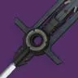

推荐者：
yester言泽虚空剑圣
 泰坦 · 虚空 · 强度S29 · 凯旋纪念碑
泰坦 · 虚空 · 强度S29 · 凯旋纪念碑
一刀劈不死勇士的本我不打
适用环境
标签
# 虚空剑圣 推荐人：yester言泽 描述：一刀劈不死勇士的本我不打 更新：2026.9.1 场景：地牢、宗师终极、日常、通用 定位：输出、清怪、续航、功能、通用 分支：虚空 类别：强度 核心：史赛克的老练 ## 职业 职业：泰坦 超能：黎明护罩 星相：堡垒、坚不可摧 碎片：扩张回声、坚韧回声、弱化回声、报复回声、警惕回声 手雷：抑制手雷 近战：圣盾投掷 职业技能：集结屏障 ## 武器 传说武器：史赛克的老练 | 狂暴、转向、煅炉眷属 ## 护甲 异域护甲：据点 套装：国王的陨落 2 件 × 溢冰 2 件 头盔：超能洗礼、弹药搜寻者、虚空虹吸 护臂：手雷洗礼、虚空灵巧、鼓舞爆弹 胸甲：近战伤害抗性、震荡阻尼器、光明利刃 腿部：虚空回收器、宽恕、恢复能量球 职业物品：收割者、强力吸引、实用终结技 ## 神器 神器：NPA斥力调节器 模组：不稳定流动、碎裂能量球、防护裂口、远方砖块、超载手雷、虚空武器输能、超新星 ## 六维 六维：生命 ~ ｜ 近战 100 ｜ 手雷 ~ ｜ 超能 100+ ｜ 职业 100+ ｜ 武器 200 ## 注解 宗旨在于一刀一个勇士，所以一些副本为了保证伤害建议携带对应的副本增益如重型选手，狂怒，全力以赴，虚空激涌 配装常态减伤非常低，需要一定的虚空刀剑泰坦熟练度，以据点格挡——释放矮盾——围绕矮盾进行清怪或攻坚。矮盾后有高额减伤和嘲讽来保证生存，否则会有暴毙风险。出伤在右键重击，但是重击后由于刀剑能量不能立刻回复，不能立刻格挡来保证减伤，因此一定要保证每次右键时有足够安全的环境。 当前版本大部分副本都有足够多的覆盖护盾战斗人员，来配合碎裂/治疗能量球提供高额超能回转，加上改版泡泡盾的超长持续时间，在某些环境保证超能循环是很轻松的事情。 全程抱着刀也不是问题，所以配装中没有选取其他武器，实际搭配时根据眩晕勇士的需求以及对远程或飞天战斗人员需求携带趁手武器即可
职业
武器
神器模组
护甲
- 生命~
- 近战100
- 手雷~
- 超能100+
- 职业100+
- 武器200
注解
宗旨在于一刀一个勇士，所以一些副本为了保证伤害建议携带对应的副本增益如重型选手，狂怒，全力以赴，虚空激涌
配装常态减伤非常低，需要一定的虚空刀剑泰坦熟练度，以据点格挡——释放矮盾——围绕矮盾进行清怪或攻坚。矮盾后有高额减伤和嘲讽来保证生存，否则会有暴毙风险。出伤在右键重击，但是重击后由于刀剑能量不能立刻回复，不能立刻格挡来保证减伤，因此一定要保证每次右键时有足够安全的环境。
当前版本大部分副本都有足够多的覆盖护盾战斗人员，来配合碎裂/治疗能量球提供高额超能回转，加上改版泡泡盾的超长持续时间，在某些环境保证超能循环是很轻松的事情。
全程抱着刀也不是问题，所以配装中没有选取其他武器，实际搭配时根据眩晕勇士的需求以及对远程或飞天战斗人员需求携带趁手武器即可